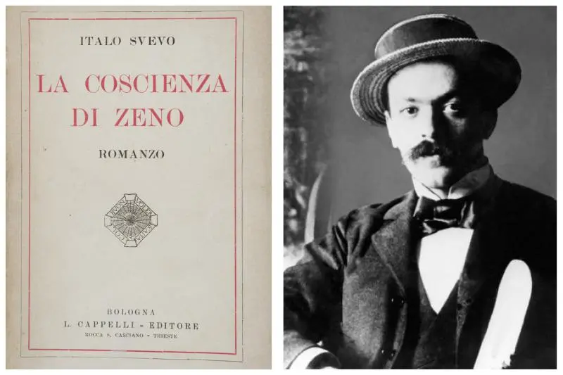
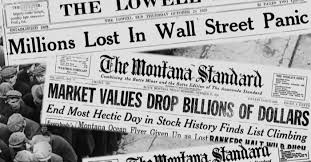
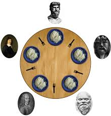
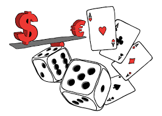

Gli argomenti che mi hanno appassionato di più
Durante quest’anno scolastico ho avuto la possibilità di studiare molti argomenti in diverse materie, ma alcuni mi hanno colpito più di altri. In questa sezione raccolgo i temi che più mi hanno appassionato: per ciascuna materia ho scelto un argomento che mi ha coinvolto in modo particolare, perché mi ha fatto vedere le cose da una prospettiva nuova o mi ha semplicemente incuriosito.
📖 Italiano – Italo Svevo e "La coscienza di Zeno"
Ho trovato affascinante Italo Svevo e il suo romanzo La coscienza di Zeno. Quest’opera del 1923 mi ha colpito per la sua modernità e originalità. Svevo vi rompe gli schemi del romanzo tradizionale unendo introspezione psicoanalitica e ironia, collegandosi così alle più moderne esperienze narrative europee. Il protagonista, Zeno Cosini, è un antieroe inetto e indeciso, ma estremamente umano e realistico. Attraverso il suo diario in prima persona, entriamo nella mente di Zeno, con le sue debolezze (come il vizio del fumo) e i suoi autoinganni, al punto che diventa un narratore inattendibile di cui non ci si può fidare completamente. Questo mix di ironia e profondità psicologica mi ha coinvolto moltissimo, spingendomi a riflettere sulle contraddizioni della natura umana e sul tema dell’autoinganno nella vita di tutti i giorni.
📜 Storia – La crisi del '29 e il New Deal
In storia l’argomento che più mi ha interessato è stata la crisi del 1929 negli Stati Uniti e il New Deal di Franklin D. Roosevelt. Studiare il Grande Crollo di Wall Street e la successiva Grande Depressione è stato impressionante: il fallimento di migliaia di banche, il crollo della produzione industriale e la disoccupazione di massa dipingono un quadro drammatico. Ciò che mi ha colpito maggiormente è stata la risposta di Roosevelt: con il suo New Deal, lo Stato intervenne massicciamente nell’economia per risollevare il paese. Roosevelt abbandonò il laissez-faire e capovolse la vecchia idea del minimo intervento statale, chiedendo pieni poteri per attuare riforme coraggiose. Vennero lanciati programmi di lavori pubblici per creare occupazione, introdotte regolamentazioni per banche e mercati e misure di sostegno per agricoltori e disoccupati. Questo argomento mi ha interessato perché mostra come, di fronte a una crisi gravissima, la società possa reagire con innovazione e solidarietà.
💻 Informatica – Web Services

Nell’ambito informatico, l’argomento che mi ha appassionato di più sono stati i Web Services. Ho scoperto che un Web Service è essenzialmente un servizio fornito via Internet: un’interfaccia che permette a due applicazioni di comunicare e scambiarsi dati tra loro attraverso il web. In altre parole, grazie ai web services i computer “parlano” tra di loro senza intervento umano, usando protocolli standard (come HTTP) e formati comuni come XML o JSON per le richieste e risposte. Ad esempio, un’applicazione meteo sul nostro telefono invia una richiesta a un servizio web e ottiene in risposta i dati aggiornati sul clima. Capire questo meccanismo mi ha entusiasmato perché mi ha fatto vedere cosa succede “dietro le quinte” quando usiamo Internet.
🌐 Sistemi e Reti – Crittografia
In Sistemi e Reti mi ha appassionato molto il tema della crittografia, sia simmetrica che asimmetrica, soprattutto per come garantisce la sicurezza delle comunicazioni. Ho imparato che nella crittografia simmetrica si usa un’unica chiave segreta condivisa tra mittente e destinatario. Un esempio è l’algoritmo AES: veloce ed efficace. La crittografia asimmetrica, invece, utilizza due chiavi diverse, una pubblica e una privata. La chiave pubblica serve a cifrare il messaggio, mentre quella privata serve a decifrarlo. Ho trovato molto interessante vedere esempi concreti di questi concetti: come Alice e Bob possono scambiarsi messaggi sicuri usando RSA senza mai condividere una password. Approfondire la crittografia mi ha fatto capire l’importanza di questi metodi nella vita di tutti i giorni.
⚙️ TPSIT – Concorrenza tra processi
In TPSIT l’argomento che più mi ha coinvolto è stato quello della concorrenza tra processi. Si tratta dello studio di come più processi o thread possano essere eseguiti “in parallelo” su un sistema. Ho capito, ad esempio, che se due processi accedono contemporaneamente a una risorsa condivisa senza un adeguato coordinamento, possono verificarsi errori chiamati race conditions. Per evitare tali anomalie si utilizzano meccanismi di sincronizzazione come lock, semafori o monitor. Trovo questo argomento molto interessante perché è al cuore del funzionamento dei sistemi operativi e delle applicazioni moderne.
🌍 Inglese – Cuban Missile Crisis

One of the most interesting topics I studied in English was the Cuban Missile Crisis. I found this historical event particularly engaging. It was a 13-day standoff in 1962 between the United States and the Soviet Union. It is known as the moment when the world came closest to a nuclear war. I learned how President Kennedy discovered the missiles and decided to block Cuba. Both sides later reached a peaceful agreement. I think this topic taught me the importance of leadership, communication and diplomacy in very difficult situations.
📐 Matematica – Calcolo Combinatorio
In matematica mi sono appassionato al calcolo combinatorio. All’apparenza può sembrare un argomento puramente teorico, ma in realtà l’ho trovato molto stimolante e concreto. Ad esempio, sono rimasto sorpreso scoprendo quanti possibili risultati può generare anche un problema semplice: in una corsa con 10 concorrenti, i possibili ordini d’arrivo sono 10! (10 fattoriale), cioè ben 3.628.800 combinazioni diverse di arrivo! Grazie a formule eleganti per permutazioni, disposizioni e combinazioni, possiamo calcolare questi valori senza doverli enumerare uno per uno. Il calcolo combinatorio è stato uno dei temi matematici che più mi ha coinvolto perché unisce semplicità di approccio e profondità di risultati.